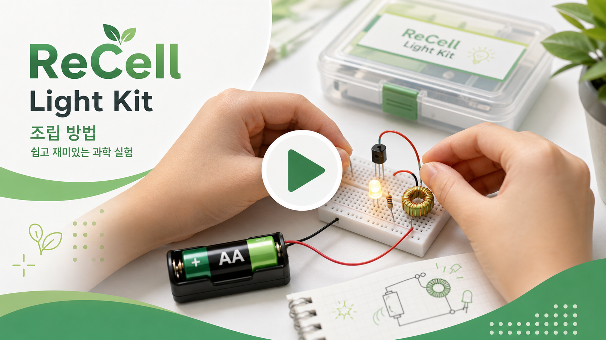
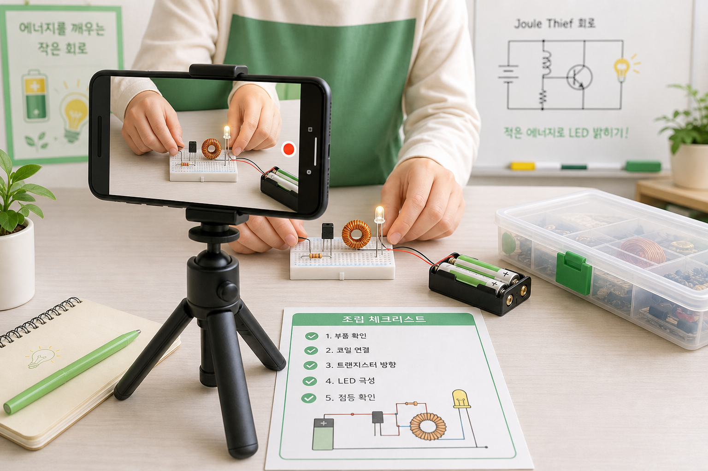

설명 동영상
조립과 원리를 영상으로 더 쉽게 확인합니다
코일 방향, 트랜지스터 방향, LED 극성처럼 글만으로 헷갈리는 부분은 짧은 영상으로 보완하면 교육 현장에서 설명 시간이 줄어듭니다.

영상 영역
영상 링크 준비 중
나중에 `web/config.js`의 `VIDEO_EMBED_URL`에 YouTube 임베드 주소를 넣으면 이 영역에 영상이 표시됩니다.
영상에 담으면 좋은 내용

- 부품을 꺼내 이름과 역할을 간단히 소개합니다.
- 코일 감는 방향과 에나멜선 피복 제거를 확대해서 보여줍니다.
- 트랜지스터 방향과 LED 극성을 실제 부품 기준으로 확인합니다.
- 일반 LED 회로와 Joule Thief 회로의 결과 차이를 비교합니다.
- LED가 안 켜질 때 확인할 순서를 짧게 안내합니다.